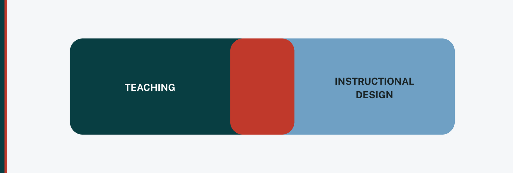

What teaching prepares you for in instructional design, and what it doesn't
Teachers get told instructional design is a natural next step, and it is. Six years in a classroom gave me more usable instinct than any single course I took afterward. But "natural next step" quietly implies the transition is mostly a matter of changing job titles, and that framing sets people up to be surprised. Some of what you built as a teacher transfers directly. Some of it has to be relearned, and a few habits work against you at first.
Here is what I wish someone had laid out for me before I made the move.
Your learners are adults now, and the defaults change
Most instructional design work is grounded in adult learning theory. Malcolm Knowles built his framework, andragogy, on a set of assumptions about adult learners: they want to know why they are learning something, they are more self-directed, they bring a reservoir of prior experience worth designing around, they are ready to learn what their actual roles demand, and their motivation tends to be internal rather than imposed.
It is worth being precise here, because the pedagogy versus andragogy split gets oversold. It is better read as a continuum than a hard line drawn at age eighteen, and andragogy is not the opposite of structured teaching. Adults still need clear expectations, credible content, and useful feedback. Good teachers already do a lot of what andragogy describes.
What actually changes is your defaults, and specifically what you can no longer lean on. You have no attendance policy. You have no gradebook. You cannot require anything. A learner who does not see the point of your module will close the tab, and nothing in your design will stop them. In a classroom, motivation could be scaffolded by structure and, honestly, by compliance. In instructional design, relevance has to be built into the thing itself, because there is nothing standing behind it.
You are no longer the only person who decides
This one caught me hardest. In my own classroom, I had real autonomy. I decided the sequence, wrote the assessments, adjusted the pacing on a Tuesday because Monday had not landed, and I did not need anyone's approval to do it.
To be fair to teaching, this is not the same as saying teachers work alone. Department teams, PLCs, curriculum committees, and co-teachers are all real collaboration. The shift is not from solo to collaborative. It is from owning the decision to facilitating it. The content belongs to a subject matter expert. The timeline belongs to a program. The standards belong to a review body. Your name is on the course, but almost nothing in it is unilaterally yours to change.
The skill that replaces classroom autonomy is the ability to move work forward through people who do not report to you. It is the least discussed part of the job and, in my experience, the one that most determines whether a course ships on time.
Teaching gave you the instincts. Instructional design gives them names, and asks you to defend them to people who were not in the room.
The process has names, and you will be expected to use them
Teachers iterate constantly. You teach a lesson first period, watch it fall flat, and fix it before third. Nobody calls that rapid prototyping, but that is what it is.
In instructional design, that instinct has vocabulary attached. ADDIE, which dates to the 1970s, lays the work out in five sequential phases: analysis, design, development, implementation, and evaluation. SAM, the Successive Approximation Model introduced by Michael Allen in 2012 in Leaving ADDIE for SAM, restructures the same work into three iterative phases built around rapid prototyping and frequent review, closer to how agile teams operate in software. Neither is correct in the abstract. Linear models suit projects with fixed requirements and formal approval gates; iterative models suit projects where the requirements are still being discovered.
The reason to learn the names is not that the thinking is new to you. It is that a team cannot coordinate around instincts. Saying "we are still in analysis" tells five people something specific about what is and is not ready. That shared shorthand is most of what the models are actually for.
The tools are different, and that part is the easiest
You will likely need to learn an authoring tool, an LMS from the administrator's side rather than the teacher's, an accessibility checker, and whatever your team uses to track projects. If you came up in Canvas or Schoology, you already know the learner-facing half of the LMS story, but the build and configuration side is a different job.
I would put this last on purpose. Tools are the most visible difference and the most learnable one. They are also what people newest to the field tend to over-index on, adding software logos to a resume while leaving the harder shifts, adult learners and shared ownership, unexamined.
What actually transfers
More than the transition talk usually admits. You know how to sequence content so it builds. You know what a real assessment looks like versus one that just generates a score. You know how to read a room and tell when an explanation is not landing, which becomes a usability instinct once you are designing for people you cannot see. You have differentiated instruction for a range of learners in one room, which is most of the way to designing accessibly.
The transition is not starting over. It is learning to name what you were already doing, formalize it enough to be reviewed by other people, and add the parts a classroom never asked of you. That is a real learning curve, and it is a much shorter one than starting from nothing.
← All posts